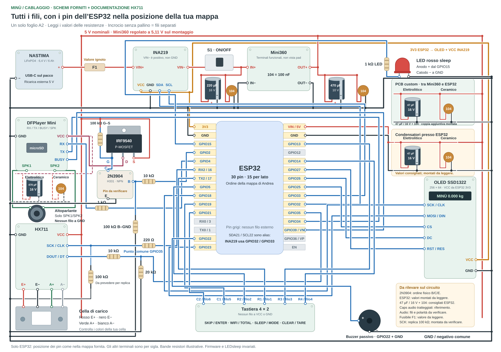

Il cablaggio della bilancia attuale
Riferimenti: schemi forniti da Andrea; per l’HX711, documentazione del progetto. OLED e INA219 ricevono VCC dal 3V3 ESP32. HX711 e ramo audio ricevono la linea VIN/5V del Mini360. Per la replica prevedere una 100 kΩ fra SCK e GND, dopo la 220 Ω sul lato HX711 e vicino al modulo. Mantiene il clock basso quando il GPIO16 non è pilotato durante avvio/reset. La presenza sulla bilancia attuale resta da confermare.
Una tavola generale con tutti i fili e sette dettagli. La generale segue la posizione dei 30 pin ESP32 nella mappa di Andrea; sugli altri moduli segui le sigle dei terminali. La tastiera usa le coppie GPIO misurate sul cablaggio montato: righe 13/14/19/21, colonne 17/5. La matrice logica del firmware non indica l'ordine fisico del connettore o la disposizione frontale dei tasti.
Presenza alimentatore USB: PC817 su GPIO36 / VP. Il ramo USB +5 V → 560 Ω → pin 1 e pin 2 → USB− è in parallelo al cavo di ricarica della NASTIMA. Sul lato ESP32, pin 3 → GND, pin 4 → GPIO36 e 10 kΩ fra GPIO36 e 3V3. USB alimentata = LOW; assente = HIGH. Il rilevatore non aggiunge un ponte fra USB− e GND ESP32 e non misura la corrente o la fine della carica.
Il buzzer passivo riceve alimentazione da ESP32 3V3: GPIO22 comanda la base del BC337-40 tramite 220 Ω, il collettore va al − del buzzer e l’emettitore a GND. Il 1N5819 collega i due terminali del buzzer, con fascetta verso il + / 3V3. Il pilotaggio del buzzer conserva gli stessi toni PWM.

Generale · Tutti i fili, con la disposizione dei 30 pin ESP32 della mappa fornita.
Per vedere i pin piccoli aumenta l’ingrandimento e scorri la tavola. Un pallino pieno indica unione dei fili; un incrocio senza pallino resta separato. I colori delle resistenze disegnate sono illustrativi: conta il valore scritto.